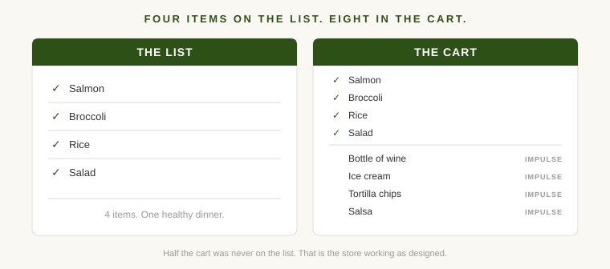
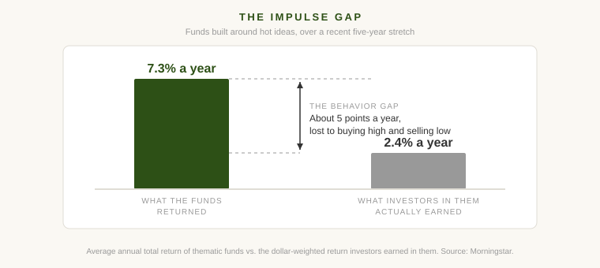

Last week I went to the grocery store to buy four things: salmon, broccoli, rice, and salad. A healthy dinner. I had a list.
I walked out with the salmon, the broccoli, the rice, and the salad. Also a bottle of wine, a pint of ice cream, a bag of tortilla chips, and a jar of salsa from a display at the end of an aisle, looking irresistible. My four-item dinner cost about twice what I planned to spend.

I don't feel bad about this, because it wasn't really a fair fight. The store spent decades and millions of dollars learning how to get me to do exactly that. Every aisle, every shelf, every display between the entrance and the register was engineered by professionals whose job is to separate me from my list.
Here's the thing I want you to sit with: the investment industry works the same way. Investments are products. They are manufactured, marketed, shelved, and sold, just like groceries. And the people selling them have studied your walk through the store just as carefully.
The Store Is Not Neutral
Start with the grocery store, because once you see the machinery there, you can't unsee it anywhere else.
Nothing about a supermarket's layout is accidental. The produce is up front because bright colors and fresh smells put you in a good mood and make the store feel healthy, which quiets the part of your brain that might otherwise resist the cookie aisle. The milk and eggs, the things you actually came for, are in the back corner. That's not for refrigeration logistics. It's so you walk past several thousand other products on the way.
Shelf position is sold, not earned. Brands pay grocery chains what are called slotting fees for placement, typically a few hundred to a thousand dollars per item, per store, which adds up to six figures for a launch across a big chain. The most expensive real estate is eye level, sometimes called the strike zone, because products there sell best. The cheap generic stuff that's just as good is usually on the bottom shelf, where you have to bend down and look for it.
And then there's the checkout line. Candy, gum, magazines, energy shots. Small items the store makes outsized profit on, placed at the exact moment your decision-making is exhausted and your kid is within arm's reach of the Snickers. Retail studies disagree on the exact numbers, but most put unplanned purchases somewhere between a fifth and half of what ends up in the average cart. Whatever the true figure, the industry would not spend this much money engineering the walk if it didn't work.
None of this is a scandal. It's just commerce. But notice what it means: the store's layout reflects what's profitable to sell you, not what's good for you to buy. Those two things overlap sometimes. They are not the same thing.
Wall Street Has a Floor Plan Too
Now walk into the investment store.
Most people think of investments as something more dignified than consumer products. Stocks, bonds, and funds feel like math, or at least like finance. But after 16 years inside family offices, I can tell you how the industry sees its own offerings: they're products. Firms literally call the teams that create new funds "product development." There are product managers, product launches, and product shelves.
And here is my favorite detail, the one that made me want to write this post. When fund companies pay the brokerage apps and platforms where you invest to carry and promote their funds, the industry's own term for what they're buying, the term that appears in official fund documents filed with regulators, is shelf space.
I'm not stretching a metaphor. The metaphor is in the paperwork.
Finding the Junk Food Aisle
So if the investment world is a grocery store, where is everything located?
The checkout-line candy is whatever is exciting right now. Funds built around a single hot idea, like artificial intelligence, space travel, or whatever else was in the news six months ago. Crypto funds. Options, which are essentially fast bets on short-term price moves, and which your investing app will helpfully offer to "unlock" for you. Shares of the buzzy new company that just hit the stock market. These products exist because excitement creates demand, and the industry is very good at packaging excitement quickly. Like the candy, they're more profitable for the seller than the staples, and they're engineered for the moment your impulse control is weakest, which is usually right after the thing has already gone up.
The eye-level shelf is your investing app's "featured" and "recommended" lists. Fund companies can pay to be there. Some funds carry a built-in charge, taken out of the money you've invested, that exists partly to pay for marketing the fund to people like you. When a platform shows you a curated list of funds, ask the same question you'd ask about the cereal at eye level: is this here because it's good, or because someone paid rent?
The milk in the back corner is the boring index fund, the plain product that just buys the entire market (an S&P 500 or total stock market fund) and charges almost nothing, a few cents a year for every hundred dollars invested. It's the staple that should anchor the cart. But nobody pays for premium placement on a product with no profit left to pay with. So it sits quietly in the search results while the shelf around it glows.
And the store layout itself, the path you're walked through, is now your phone. Trading apps figured out what grocers have known for a century: design drives behavior. Push notifications about stocks that are moving. Lists of the most popular trades. Robinhood used to fire digital confetti across your screen when you placed a trade, until regulators objected and the company dropped the feature in 2021. Massachusetts regulators later reached a settlement with the company over exactly these practices, using a phrase that should sound familiar by now: the app was designed to "encourage and entice continuous and repetitive use." A grocery executive would call that foot traffic.
The Markup Is Bigger Than You Think
Here's where the analogy stops being cute and starts costing real money.
When I blow my grocery list, the damage is forty dollars and some regret about the ice cream. The mistake doesn't follow me. Next week is a new list.
Investment impulse buys compound. The research firm Morningstar studied those hot-idea funds, the checkout candy of the fund world, and found that over a recent five-year stretch the funds themselves returned about 7% a year, but the average investor in them earned under 3%. The gap exists because people consistently bought in after the idea had soared and sold after it crashed. Same products, same shelf, but the timing of the impulse destroyed most of the return. Morningstar has also found that the large majority of these funds fail to beat a plain whole-market fund over time, when they survive at all.

Run the numbers on what an impulse habit costs. A hundred dollars of junk food a month is $1,200 a year. A portfolio that earns 3% instead of 7% on a $100,000 balance is a $4,000 difference in year one, and the gap widens every year after that, because last year's missing gains were supposed to be earning this year's. Over a few decades the impulse aisle can quietly eat half of what your savings should have become.
The grocery store charges you once. The investment store charges you forever.
How to Shop
I am not going to tell you the answer is discipline, because discipline is exactly what the store is designed to defeat. Willpower in the checkout line is a losing strategy. Ask my ice cream.
What actually works, in groceries and in investing, is the list. Not the intention to have a list. A written one, made before you walk in, when you're calm and fed and thinking about what you actually need.
In investing, the list is a simple written plan: what you're investing for, what you'll hold, how much you'll add and when, and under what conditions you'll change any of it. It doesn't need to be long. A paragraph beats nothing. The point is that every product the store shows you afterward gets tested against a decision you already made, instead of against your mood.
Then treat anything that wasn't on the list the way you should treat the candy rack: as a thing placed there, on purpose, by someone who profits when you reach for it. You can still buy it. Just know that you didn't find it. It found you.
The store is engineered. Your list is the counter-engineering. Bring one.
Want to go deeper on why the boring staples win? Read Good Investing Is Boring. And if your cart already has twenty funds in it, The 20-Fund Portfolio is for you.